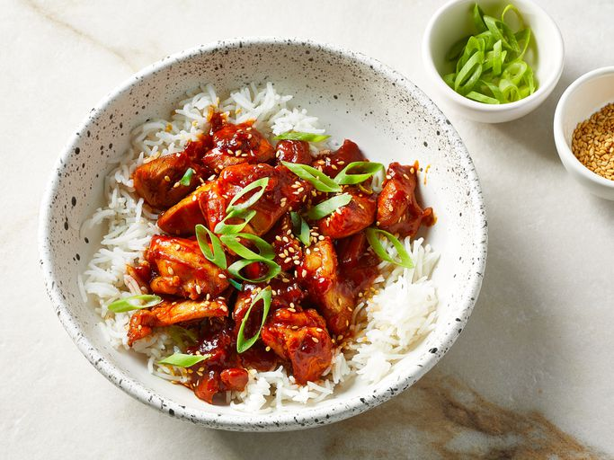

Sweet and Spicy Gochujag Chicken

Description
This test kitchen-approved gochujang chicken recipe is “fast, flavorful, and fun,” according to recipe tester Kathryn Hendrix.
ingredients
- Gochujang: This recipe starts with ⅓ cup gochujang (Korean hot pepper paste).
- Soy sauce: Less sodium soy sauce lends tons of savory, umami-rich flavor.
- Mirin: Sweet rice wine (mirin) gives the dish even more umami-rich, yet mildly sweet, flavor.
- Honey: Honey puts the “sweet” in the “sweet and spicy.”
- Garlic: Take the flavor up a notch with three cloves of garlic.
- Sesame oil: Add one or two teaspoons of sesame oil, depending on your flavor preferences.
- Ginger: For the most delicious results, grate your own fresh ginger.
- Canola oil: Cook the chicken in canola oil.
- Chicken: Opt for skinless, boneless chicken thighs.
- Garnishes: Garnish the gochujang chicken with toasted sesame seeds and green onions.
- Rice: Serve the gochujang chicken over white rice.
Steps
- Make the sauce in a bowl and cook the chicken in a wok.
- Add the sauce to the wok (with the chicken) and cook until thick and bubbly.
- Garnish and serve over rice.